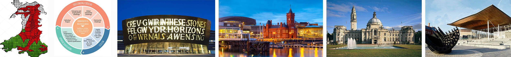

The Skills Challenge certificate is a new compulsory qualification introduced in September 2015. Successful completion of the Skills Challenge along with other supporting qualifications can lead to achievement of the overarching Welsh Baccalaureate qualification.
The primary aim of the Skills Challenge is to enable learners to develop and demonstrate an understanding of and proficiency in essential and employability skills:
At KS5 Advanced Level the Skills Challenge is worth 1 A-level and at KS4 National/Foundation it is worth 1 GCSE.
Delivery of the subject is during Skills Challenge lessons:
The Skills Challenge is made up of the following components:
The Welsh Baccalaureate
The requirements of both the Skills Challenge Certificate and Supporting Qualifications must be met in order to achieve the overarching Welsh Baccalaureate.
The qualification has three levels:
The Advanced is worth 1 A-level and the National/Foundation is worth 1 GCSE.
The Supporting Qualifications are made up of the following components:
To achieve the Advanced Welsh Baccalaureate learners must achieve the Advanced Skills Challenge Certificate together with the following supporting qualifications:
English/Welsh Language GCSE and Mathematics/Numeracy GCSE at A*-C level and 2 A-level’s at A*-E or equivalent.
To achieve the National Welsh Baccalaureate learners must achieve the National Skills Challenge Certificate (A*-C) together with the following supporting qualifications:
English/Welsh Language GCSE, Numeracy GCSE and 3 other GCSE’s (maximum of 2 being GCSE equivalent qualifications) at A*-C level.
To achieve the Foundation Welsh Baccalaureate learners must achieve either the National or Foundation Skills Challenge certificate together with the following supporting qualifications:
English/Welsh Language GCSE, Numeracy GCSE and 3 other GCSE’s (maximum of 2 being GCSE equivalent qualifications) at A*-G level.